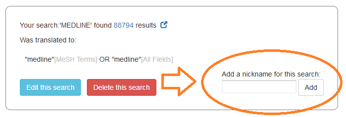

An extension of the work in Visualizing PubMed, Search Workbench allows you to examine, edit and visualize your PubMed searches. Perhaps most importantly, it also allow you to directly compare searches to one another — facilitating the process of fine-tuning a search strategy.
When you enter a search, it is run against PubMed using the programmatic interface maintainted by the National Center for Biotechnology Information. You first see how your search is tranlated by Automated Term Mapping. Then you see how the parts of your search relate to one another (using the logic that drives PubVenn) and how that search performs over time (via PubMed-by-year).
If you directly edit a PubMed translation, you'll notice that even simple searches, such as "diabetes and heart disease", quickly turn into something a bit more ungainly:
("diabetes mellitus"[MeSH Terms] OR ("diabetes"[All Fields] AND "mellitus"[All Fields]) OR "diabetes mellitus"[All Fields] OR "diabetes"[All Fields] OR "diabetes insipidus"[MeSH Terms] OR ("diabetes"[All Fields] AND "insipidus"[All Fields]) OR "diabetes insipidus"[All Fields]) AND ("heart diseases"[MeSH Terms] OR ("heart"[All Fields] AND "diseases"[All Fields]) OR "heart diseases"[All Fields] OR ("heart"[All Fields] AND "disease"[All Fields]) OR "heart disease"[All Fields])
Using such long strings as search labels makes it difficult to see slight variations in a search. It also makes comparing them on a chart cumbersome.
In these cases, please take advantage of the ability to nickname a search. Choose a name, click "add", and you'll use that nickname for that search going forward
Once you have two or more searches, you can easily compare them using the tools found underneath "Searches".
Select the searches you want to compare from a list of ones already performed — you will then see that comparison diagrammed using the same chart-by-year and venn diagrams seen at the outset.
Review (or nickname, or delete) any past search by choosing it from the list.
If you want to save a session for later, you have the option of saving it locally or to a text file. Local sessions are more convenient to work with, but they are only accessible on the browser/machine where you created them. Text files can be used on any machine (and by any user) that can read them.
You will note the "Load previous session" buttons when you start a session. Just choose the locally saved session (or text file) you want, and you can resume where you left off.
When you are comparing two or more searches, you can choose "Show unique records" to show those citations that show up in one search, but not in any of the others you are comparing at that moment.
PubMed by Year is a project of Ed Sperr, M.L.I.S.
Ed can be reached at ed_sperr@hotmail.com or esperr@uga.edu. Please feel free to reach out with any comments or enhancement requests!
PubMed by Year is put together with JavaScript and jQuery. Search translations and counts are fetched with NCBI's Entrez Programming Utilities. NCBI does not yet have an easy way to grab by-year counts for a search (short of launching 50+ calls to the API), so a custom webservice is used.
Google Charts is used to draw the line charts, and Ben Fredrickson's venn.js overlay of Mike Bostock's d3.js performs the set visualization. Responsive layout is made easier with Bootstrap.
You can find the source code for this application at GitHub.
Please note that the information provided here comes ultimately from the National Center for Biotechnology Information and is subject to the terms listed under their Disclaimer and Copyright notice.
Feel free to use this tool as you wish, but if you use Search Workbench for publication, I'd appreciate a citation:
Sperr E. Search Workbench [Internet]. 2017 [cited your_date_here]. Available from https://esperr.github.io/search-workbench/
Want to have even more fun with MEDLINE visualizations? Check out the full versions of PubVenn and PubMed by Year as well as other cool tools at Visualizing PubMed.